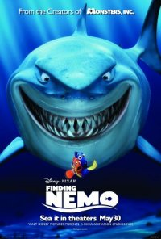
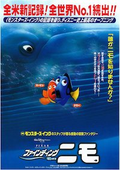

오늘의 상영작
한 편 한 편 다른 이야기가
상영을 기다리고 있어요.
한 편의 영화는 국경을 넘어 어떤 얼굴을 할까요?
한국, 미국, 일본의 포스터를 데이터로 만나보세요.


불이 꺼지기 전, 숫자로 먼저 만나는 포스터 시네마.
한 편 한 편 다른 이야기가
상영을 기다리고 있어요.
같은 영화의 서로 다른 얼굴을
필름처럼 모아봤어요.
한국, 미국, 일본에서 만난
세 가지 포스터 이야기.
한 영화의 두 포스터를
같은 스크린에 올려볼까요?
각 나라의 포스터에서 가장 넓은 면적을 차지한 색은 무엇일까요? 버튼을 눌러 국가별 컬러를 비교해 보세요.
선택한 국가에서 가장 많이
등장한 지배 색조
같은 영화의 두 포스터를 나란히 놓으면 어떤 장면이 펼쳐질까요? 구성과 지배 색조의 조합을 살펴보세요.
구성이 다른 포스터 중에서도 같은 지배 색조를 가진 쌍이 있습니다. 같은 영화의 분위기는 남기고, 보여주는 장면은 바뀌는 거죠.
작품을 선택하면 세 나라의 포스터가 한 화면에. 같은 영화가 가진 서로 다른 얼굴을 발견해 보세요.
← 옆으로 넘겨 더 많은 영화를 만나보세요 →